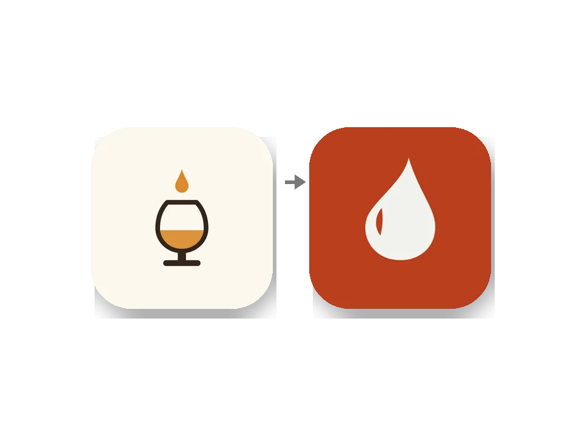

첫잔 [9] — .gitignore 한 줄이 업데이트를 막은 날, 그리고 세 번째
오늘 앱 아이콘을 바꾸고 업데이트를 올렸는데, 그 업데이트를 받을 수 있는 폰이 세상에 한 대도 없었습니다. 같은 함정에 빠진 게 이번이 세 번째입니다. 이제는 규칙으로 적어 둘 때가 됐습니다.
지문이라는 것
Expo 앱은 두 층입니다. 스토어나 APK로 설치하는 네이티브 층과, 그 위에서 도는 JS 층. JS만 바뀌었으면 스토어 심사 없이 OTA로 바로 밀어 넣을 수 있는데, 조건이 하나 있습니다. 업데이트와 설치된 빌드의 네이티브 지문이 같아야 합니다. 지문은 네이티브 구성 전체를 해시한 값이라, 네이티브 모듈을 하나 더하면 지문이 바뀌고 옛 빌드는 새 업데이트를 안 받습니다. 안전장치입니다. 지문이 다른 JS를 받으면 앱이 죽으니까요.
문제는 "네이티브 구성"에 무엇이 들어가는지가 직관과 다르다는 겁니다.
세 번
| 날 | 바꾼 것 | 일어난 일 |
|---|---|---|
| 9월 6일 | .gitignore에 한 줄 | 지문이 바뀌어 OTA가 빌드 13·14에 닿지 않음. 2분 뒤 되돌림 |
| 9월 8일 | package.json lint 스크립트에 --no-cache 한 단어 | scripts도 지문에 들어감. 단어를 빼서 복원 |
| 9월 19일 | 앱 아이콘과 스플래시 그림 | 지문 9b3ca730 → 05559994. 어떤 빌드도 못 받는 OTA가 나감 |
첫 번째는 회원 탈퇴 함수를 만들다 supabase 임시 폴더를 무시 목록에 넣은 것이었습니다. 커밋하고 업데이트를 올리니 런타임 버전이 달라져 있었습니다. 원인을 찾는 데 시간이 걸렸고 고치는 건 한 줄 지우는 것이었습니다. 두 번째는 lint 캐시가 꼬여서 옵션 한 단어를 붙인 것. 이때 이미 규칙에 적었습니다. "package.json의 scripts도 지문에 들어간다."
그런데 오늘 세 번째. 브랜드 마크를 첫 방울로 정하고 아이콘과 스플래시를 새로 그렸습니다. 그림 파일을 바꾸는 건 당연히 네이티브 빌드가 필요한 일이지만, 그 상태에서 JS 수정을 OTA로 올리면 안 된다는 데까지는 생각이 못 미쳤습니다. 아이콘은 네이티브 자원이니 지문에 들어가고, 지문이 바뀐 업데이트는 설치된 어떤 빌드와도 맞지 않습니다. 올리긴 올렸는데 받는 사람이 없는 업데이트였습니다.

임시 처방
다음 네이티브 빌드 전에 OTA를 올려야 하면 아이콘 두 장을 잠시 옛것으로 되돌립니다.
git stash push -- assets/images/icon.png assets/images/splash-icon.png
eas fingerprint:compare <설치 빌드의 지문> # 일치 확인
eas update
git stash pop어댑티브 아이콘과 파비콘은 지문에 안 들어갑니다. 왜 icon.png와 splash-icon.png만 들어가는지는 아직 모릅니다. 실측으로만 압니다.
관측
세 사고의 공통점은 전부 "JS와 무관한 파일"을 만졌다는 겁니다. 무시 목록, 스크립트 이름, 그림. 그래서 매번 OTA와 상관없다고 생각했습니다. 지문은 JS와 무관한지가 아니라 빌드 입력에 들어가는지를 봅니다.
남긴 규칙
빌드 사이에 .gitignore, package.json의 scripts, icon.png, splash-icon.png를 건드리지 않는다. 배포 전에 반드시 fingerprint:compare.
아직 안 되는 것
"배포 전에 반드시"는 사람이 기억해야 하는 규칙이고, 세 번 당한 사람이 네 번째를 안 당한다는 보장은 없습니다. 게시 명령 앞에 지문 비교를 자동으로 끼워 넣어야 하는데, 오늘은 사고를 수습하느라 거기까지 못 갔습니다.

Seok
연구하면서 개발합니다. 배터리 재료를 원자 단위에서 계산하는 법을 바닥부터 배우는 중입니다. → 글 더 보기